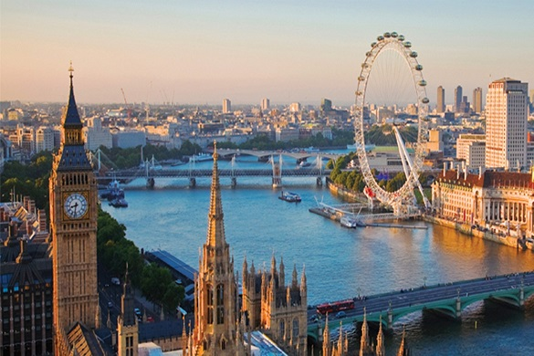
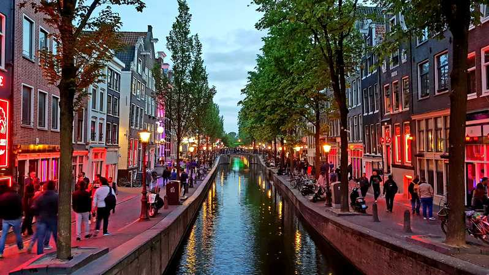
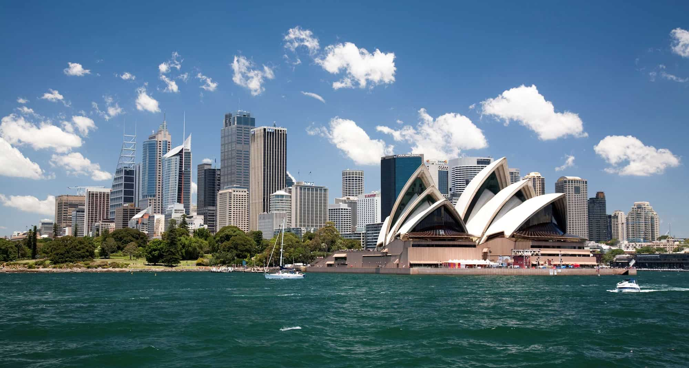

Travel B
Bienvenido al blog de Blanca
Blanca,
MI BLOG DE VIAJES
Amsterdam
Países Bajos, Europa

Amsterdam es una ciudad nórdica, capital de los Países Bajos. Con cerca de un millón de habitantes, es conocida como la Venecia del Norte debido a los canales que atraviesan la ciudad.
Sydney
Australia, Oceanía
Sydney , esta ciudad, capital de Australia y Nueva Gales del Sur, es la más poblada de Australia con mas de 5 millones de habitantes. Está ubicada en la costa este del país por lo que se encuentran increíbles playas en ella.
Sobre mí
Soy Blanca, me encanta viajar y ojalá pudiera hacerlo siempre. En este blog os cuento sobre mis ciudades favoritas y lo mejor que encontrarás en ellas. A algunas he ido, a otras iré. ¡Espero que os guste!
Popular Posts
-

Londres
Ver este post -

Amsterdam
Ver este post -

Sydney
Ver este post
Tags
Amsterdam Nueva York Londres Sydney Viajes Barcelona Ideas Blog
Subscribe
Enter your e-mail below and get notified on the latest blog posts.